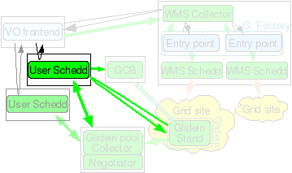

Installation of a User Pool Scheduler Node
1. Description

This node will be a Condor Submit node for the user jobs. You can install many such nodes to improve scalability of your system.
2. Hardware requirements
| CPUs | Memory | Disk |
| 1 | min 2GB (16GB recommended) | ~5GB |
This machine needs a reasonably recent CPUs and a large amount of memory (min 2GB, recommended 16GB, ~1.5MB per running job). The amount of disk needed depends on the user jobs; Condor itself uses very little (5 GB should be enough for Condor alone)
3. Needed software
| Software | Notes | Install Before glideinWMS |
| Linux OS | A reasonably recent Linux OS (RH/SL4 nad RH/SL5 tested at press time). | X |
| The OSG client software. | This can be installed prior to glideinWMS, but the installer can install it inline with the glideinWMS install | |
| The Condor distribution as a tarball. | The installer will use the tarball to install and configure Condor inline | |
| The glideinWMS software. |
NOTE:
- Condor version v7.3.1 has a known issue with incorrect return/exit codes of condor_status and condor_q
-
If you are using Condor version v7.3.2 disable VOMS checking in condor_config file used by Condor daemons other
than that used by user schedd. VOMS checking adds unrequired overhead. To do so, set
USE_VOMS_ATTRIBUTES = False
or for individual condor daemons like collector
COLLECTOR.USE_VOMS_ATTRIBUTES = False
4. Before you begin...
4.1 Required Certificates/Proxies
The installer will ask for several DNs for GSI authentication. You have the option of using a service certificate or a proxy. These should be created and put in place before running the installer. The following is a list of DNs the installer will ask for:
- Glidein Submitter cert/proxy DN
- Pool Collector cert/proxy DN
- Glidein Factory cert/proxy DN
4.2 Miscellaneous Notes
When asked if you want to enable Match authentication, if you are using Condor 7.1.3 or later, answer 'y' unless you have a reason not to.
5. Installation instructions
The scheduler node software should be installed as root. While it is possible to run the schedds as a non-privileged user, it has some serious security implications; see the Condor manual for details. The whole process is managed by a install script described below.
Move into
glideinWMS/install
and execute
./glideinWMS_install
You will be presented with this screen:
Welcome to the glideinWMS Installation Helper
What do you want to install?
(May select several options at one, using a , separated list)
[1] glideinWMS Schedds and Collector
[2] Glidein Factory
[3] GCB
[4] User Pool Collector
[5] User Schedd
[6] Condor for VO Frontend
[7] VO Frontend
[8] Components
Select 5.
Now follow the instructions and install all the software components. Further detail and a walk-through is presented below:
| Field | Installation Text | Description |
| Condor | Where do you have the Condor tarball? Where do you want to install it? If something goes wrong with Condor, who should get email about it? |
The user Schedd is part of the Condor pool that will actually run the user's jobs.
This will be the server that will schedule jobs from the users to the glidein pilots that
will be running in the grid. This piece of the install will configure
the collector to work with the submitted glideins. For this, you will need a condor distribution and a location to install to. It will also prompt for a administrator email. Installing this into a user home directory is not recommended. |
| GSI Security | Where can I find the directory with the trusted CAs? | GSI security is based on x509 certificates. You will next need a certificate or proxy for the WMS collector. See the previous section for more information on required certificates and proxies. |
| PrivSep | Please insert all such DNs, together with a user nickname. | You will need to provide the DN of the pool collector and the DN of the glidein factory. This will populate the condor_mapfile with the dns and nicknames. This must be mapped to local users for privilege separation to work. See GSI Reference for more information. |
| Quill | Do you want to Use Quill (works for 6.8.X only)? | *** |
| Collector | What node is the collector running (i.e. CONDOR_HOST)? | Here you will have to provide the host (and port if not default) of the User pool collector. |
| GCB | Please list all the GCB servers you will be using | If you are using GCB instead of CCB (now included with Condor), you will need to put the hostnames of the GCB nodes here. Note that GCB is not recommended unless you have network restrictions that prevent you from using CCB. |
| Tuning | How many secondary schedds do you want? | The proper value of this value depends on many factors, including the memory and CPU of the server running it as well as the number of jobs submitted and the number of entry points. This should be increased enough so that each schedd will not have to handle multiple glidein requests to different entry points from factories simultaneously. The default install of 10 schedds should be enough to handle a site with around 10000 jobs. If you are only running hundreds of jobs, you may want to tune this down. Conversely, with higher amounts of jobs, this may need to be increased. This value depends on your installation and can later be tuned based on load and average number of jobs. |
Here a possible set of answers is presented; your setup will probably be slightly different:
Welcome to the glideinWMS Installation Helper
What do you want to install?
(May select several options at one, using a , separated list)
[1] glideinWMS Schedds and Collector
[2] Glidein Factory
[3] GCB
[4] User Pool Collector
[5] User Schedd
[6] Condor for VO Frontend
[7] VO Frontend
[8] Components
Please select: 5
The following profiles will be installed:
[5] User Schedd
Installing user submit schedds
Installing condor
You will now need the Condor tarball
You can find it on http://www.cs.wisc.edu/condor/
Versions v7.2.2 and 7.3.1 have been tested, but you
should always use the latest one
Where do you have the Condor tarball? /root/condor-7.4.2-linux-x86_64-rhel5-dynamic.tar.gz
Checking...
Seems condor version 7.4.2
Where do you want to install it?: [/opt/glidecondor] /opt/glidecondor
Directory '/opt/glidecondor' does not exist, should I create it?: (y/n) y
Installing condor in '/opt/glidecondor'
If something goes wrong with Condor, who should get email about it?: admin@my.org
Extracting from tarball
Running condor_configure
Installing Condor from /opt/glidecondor/tar/condor-7.4.2 to /opt/glidecondor
Condor has been installed into:
/opt/glidecondor
Configured condor using these configuration files:
global: /opt/glidecondor/etc/condor_config
local: /opt/glidecondor/condor_local/condor_config.local
You should look inside the installation log for some details about how
Condor was installed.
Created scripts which can be sourced by users to setup their
Condor environment variables. These are:
sh: /opt/glidecondor/condor.sh
csh: /opt/glidecondor/condor.csh
Do you want to split the config files between condor_config and condor_config.local?: (y/n) [y] y
The Condor config has been put in your login files
Please remember to exit and reenter the terminal after the install
Condor installed
Configuring GSI security
To use the GSI security, you either need a valid GSI proxy or
a valid x509 certificate and relative key
The cert/proxy subject of User Schedd, Glidein Pool Collector and VO Frontend
(used by glidein startd) will be added as the trusted daemon in GSI_DAEMON_NAME
in the condor configuration.
Will you be using a proxy or a cert? (proxy/cert) cert
Where is your certificate located?: /etc/grid-security/hostcert.pem
Where is your certificate key located?: /etc/grid-security/hostkey.pem
My DN = '/DC=org/DC=doegrids/OU=Services/CN=submit1.my.org'
Glidein Pool Collector and VO Frontend and glidein startd will connect to and
act as client to User Schedd. Subjects for these services should be in the
gridmap file of the User Schedd.
Please insert all such DNs, together with a user nickname.
An empty DN entry means you are done.
DN: /DC=org/DC=doegrids/OU=Services/CN=collector1.my.org
nickname: [condor001] collector
Is this a trusted Condor daemon?: (y/n) y
DN: /DC=org/DC=doegrids/OU=Service/CN=gfactory/gfactory1.my.org
nickname: [condor002] pilot
Is this a trusted Condor daemon?: (y/n) y
DN: enter
Do you want to Use Quill (works for 6.8.X only)?: (y/n) [n] n
What node is the collector running (i.e. CONDOR_HOST)?: collector1.my.org
Please list all the GCB servers you will be using
Leave an empty line when finished
GCB node:enter
How many secondary schedds do you want?: [9] 4
The installer will also start the Condor daemons.
The installer also created init.d scripts in:
/etc/init.d/condor
Use it to stop and restart the schedd(s)
NOTE: Since Schedd node is installed as root, condor installer will create condor.sh and condor.csh files in /etc/profile.d so that you have correct environment setup. If this machine hosts another condor installation or you prefer not to have user PATH and CONDOR_CONFIG point to this condor setup automatically, you need to manually move these files out from the /etc/profile.d
6. Submitting user jobs
From the user point of view, this is just a regular Condor pool.
However, since the resources potentially come from all over the world, users need to create more complex Requirements,
in order to prevent the jobs from landing on sites that cannot run their jobs.
Users will need to know which attributes the glideins publish and use them accordingly.
One useful attribute that all glideins publish is GLIDEIN_Site. If a user wants to restrict its job to a list of sites, he can do it by using:
+DESIRED_Sites = "Site1,Site4,Site7,Site22"
Requirements = stringListMember(GLIDEIN_Site,DESIRED_Sites)
Some glideins may also need to properly identify the final user, using GSI authentication. A user should thus add the following line:
x509userproxy = <path to X509 proxy>
to their Condor submission file.
7. Fine Tunning for Large Scale Installations
7.1 Increase the number of available file descriptors
Number of ports used by the condor_schedd process increases as the number of jobs running/queued in the schedd increase. The default number
of file descriptors per process is 1024 on most systems. Increase this limit to ~16k or value higher than number of jobs that might be in
the queue at any given time. This is particularly required for large scale installations.
In most cases for default installation, user schedd is configured to start as root and started through the script in /etc/xinet.d/condor This
is a good place to set higher file descriptor limit for the schedd process.